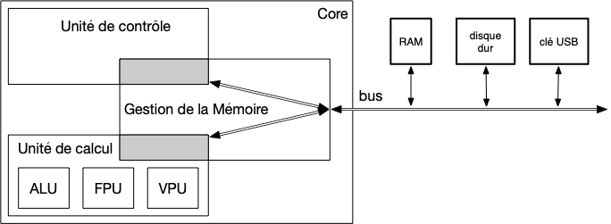

Core
Chaque core est une unité de calcul dont le but est d'exécuter des instructions.
Sont architecture suit un modèle dit : modèle de Von Neumann :

Le principe est le suivant :
- l'instruction a exécuter est lue en mémoire par la MMU (Memory Management Unit) sous la forme d'un (ou plusieurs) entier de 64bit arrivant par le bus
- cet entier est passé à l'unité de contrôle qui la décode pour trouver l'instruction à réaliser
- cette instruction est réalisée par l'unité de calcul dans une de ses sous-unités :
- si besoin, la MMU cherchera une donnée en mémoire pour effectuer l'opération ou enverra en mémoire son résultat.
Architecture du sunny cove core des architectures Ice lake d'intel.
- Les cores 64b d'Intel s'appellent x86-64 ou encore x64. Le mode x86 peut vouloir dire 32b : faites attention.
- le mode des core x64, celui que nous décrivons ici, est le long mode. Le Protected mode est un mode 32b, donc obsolete.
Instructions
Protection ring
Une instruction du core a un niveau d'accessibilité, appelé cercles de protection. Les core x64 en proposent 4, mais seuls deux sont utilisés :
- kernel (ring 0)
- user (ring 3)
Une instruction exécutée en ring 3 ne pourra pas accéder à une mémoire de ring 0.
Les systèmes d'exploitations cachent ainsi la partie noyau derrière un ring 0, la seule façon d'accéder à ce code étant via un appel système ou une interruption que l'on a vue dans la partie OS.
Appels au Noyau
ces appels se font en ring 0, c'est l'unique moyen qu'a un process utilisateur (évoluant en ring 3) d'exécuter du code en ring 0.
Il y a deux appels possibles, comme on l'a vu dans la partie OS :
- les interruptions
- l'appel système
Interruptions
Une interruption est une demande d'action initiée par un matériel. Le core gère les interruptions en associant à chaque interruption une Table des interruptions de 16B qui détermine l'action à mener (essentiellement l'adresse de la fonction du noyau qui va la gérer).
Comme il y a 256 instructions possible, la gestion des interruptions tient dans un tableau de $256 \cdot 16B = $ \text{KiB}$, nommé Interrupt vector table stocké en mémoire. Le core ne connaît que l'adresse du début de ce tableau qu'il stocke dans un registre spécialisé.
Appel système
Un appel système est initié par l'instruction syscall sur les cores x64. Cette instruction est un appel d'une fonction du noyau (stockée dans un registre spécialisé).
Les différents paramètres de la fonction syscall permettent de faire plus de 300 appels différents. Voir la liste des paramètres là : https://x64.syscall.sh/
Caches
Le core passe son temps à demander des valeurs à la mémoire, que ce soit la prochaine instruction à exécuter ou le stockages des données d'un process. L'accès mémoire étant lent par rapport à la vitesse du core, une technique de contournement a été mis en œuvre :
Adresse logique vs adresse physique
Hyper Threading
Un core ne peut théoriquement exécuter qu'un seul thread. L'hyper-threading permet d'exécuter deux threads en concurrence, en profitant des blocages dues aux attentes des entrées/sorties. Ceci est possible lorsque l'on exécutes deux thread d'un même process, puisqu'ils se partagent tout sauf les registres et presque toute la mémoire (sauf leurs piles).